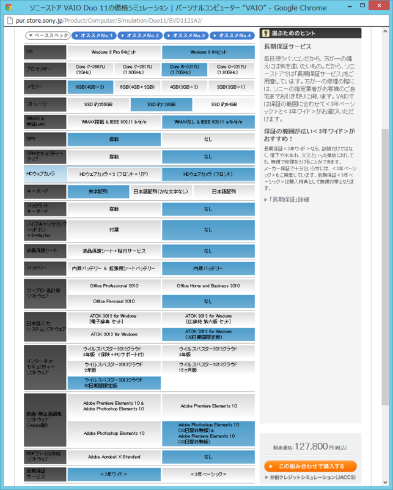

VAIO Duo 11 予約したった！
公開日：
なんだか寝られなかったので、【PC Watch】 ソニー、11.6型フルHDの“スライダーハイブリッドPC”「VAIO Duo 11」 〜Ultrabook準拠、デジタイザーの手書きに対応 の価格シミュレートをしていたら、いつの間にか予約していた。2012年11月10日頃お届けとのこと。会社に届くようにしたので*1、できれば9日（金）には着いてほしいなぁー。

お金がないので CPU と SSD はケチらざるを得なかったけれど*2、まぁ、サブ機と割り切れば問題はなさげ。そりゃ、Core i7 に 256GB もあれば最高だけどさ。その代り、メモリはめいいっぱい積んでおいた。
Intelの第3世代CoreプロセッサのUシリーズは、標準スペック上では17WのTDPが設定されている。しかし、cTDPを利用すると、そのTDPを一時的に上げたり下げたりできる。……
ただし、この25Wの設定を利用できるのはCore i7のみ。なので、このcTDPの機能を利用したい場合にはCTOでCore i7を選ぶ必要があるので注意したい。
【笠原一輝のユビキタス情報局】 素早く変形するだけじゃなくTDP限界も超える 〜ソニー「VAIO Duo 11」開発者インタビュー
あとはサブの AC アダプターがほしいのだけど、8,000円以上する。
小野塚「ノイズについては、電源に関する部分も大きいんですよ。当初は『VAIO X』に使っていたものと同サイズの、非常に小さなACアダプターを採用する予定でした。最終的に8ccほど大きくなってしまったのですが、これはタッチに対する外来ノイズ対策のために、大きくなってしまった部分なのです。各国・各状況によって、電源にのっているノイズも大きく異なっているので、その対策が必要でした」
とはいえ、各社のACアダプターが大型化する中で、Duo 11のACアダプターは、かなり小さい部類に入る。カタログでこそうたわれていないが、これでも「1時間で80％」までは充電できるため、実用性は高い。
ASCII.jp：複雑なスライド機構を実現したVAIO Duo 11製造の秘密｜西田 宗千佳のBeyond the Mobile
サードパーティー製でお安く済ましたいのだけど、ちょっと難しそう。S7S でも、AC アダプタからノイズがのって、タッチパネルが異常動作するケースが結構みられた。